This project intends to explore the creative opportunities that come with one’s death. Disguised as a masquerade, this funeral revitalizes death as an exciting, engaging, and positive sendoff and dance party for Sin. How will your funeral represent you? How will your funeral distinguish itself in the same way that you did from everyone around you? Sin chose a masquerade because the nature of the event conveys the emotions that he would want associated with his death: Darkness, but happiness. Fancy, yet informal. Edgy, yet attractive. How would you like your friends and family to celebrate your life?
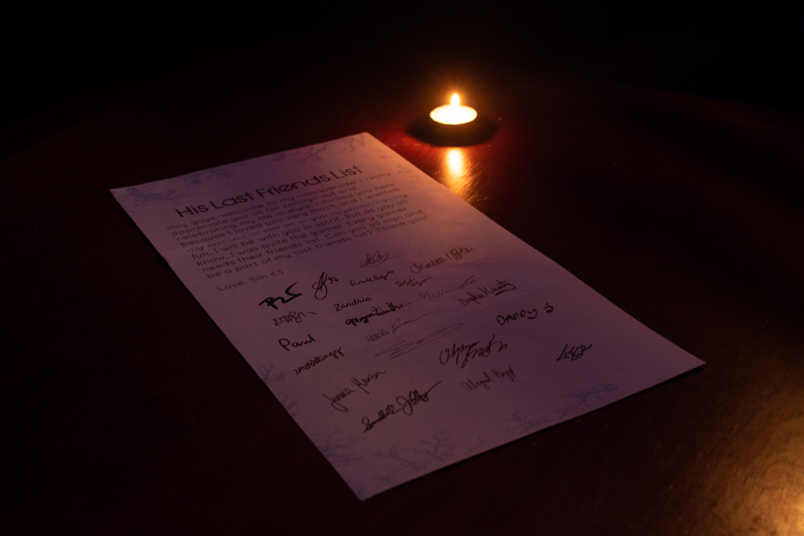
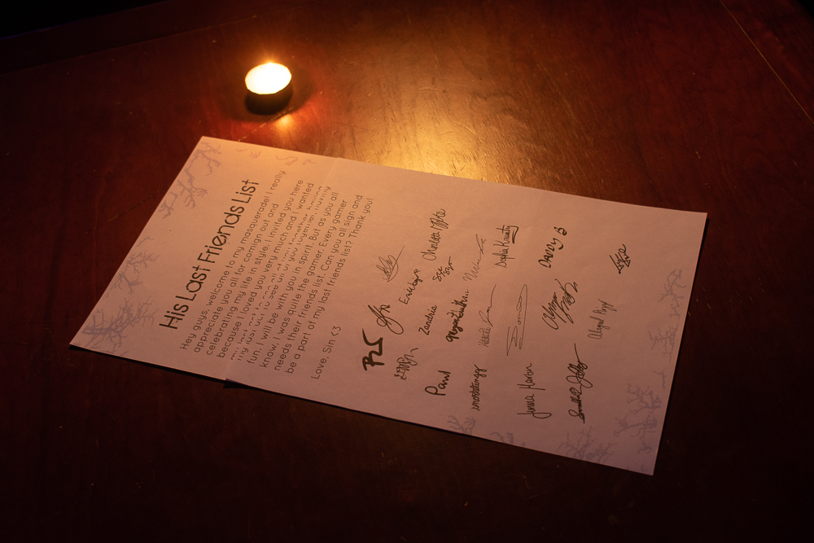
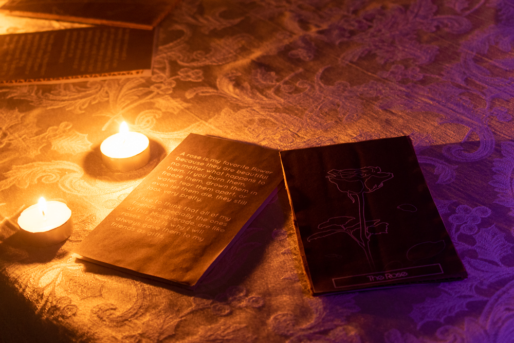
 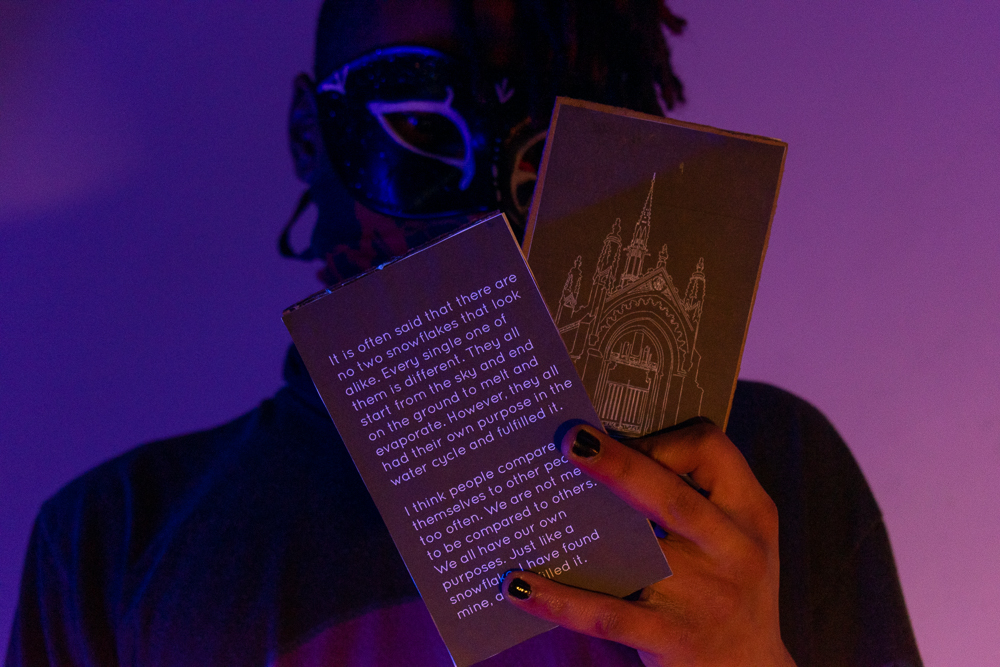
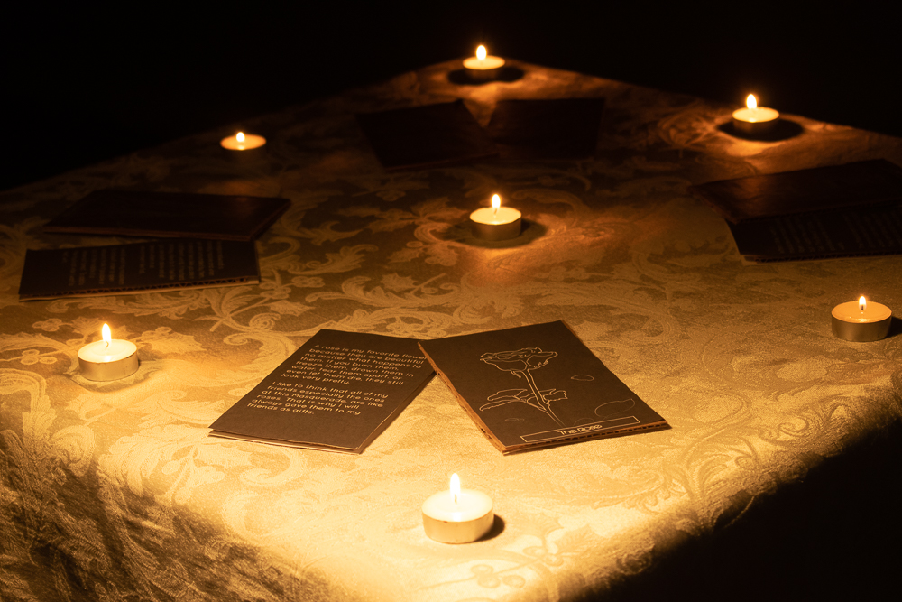
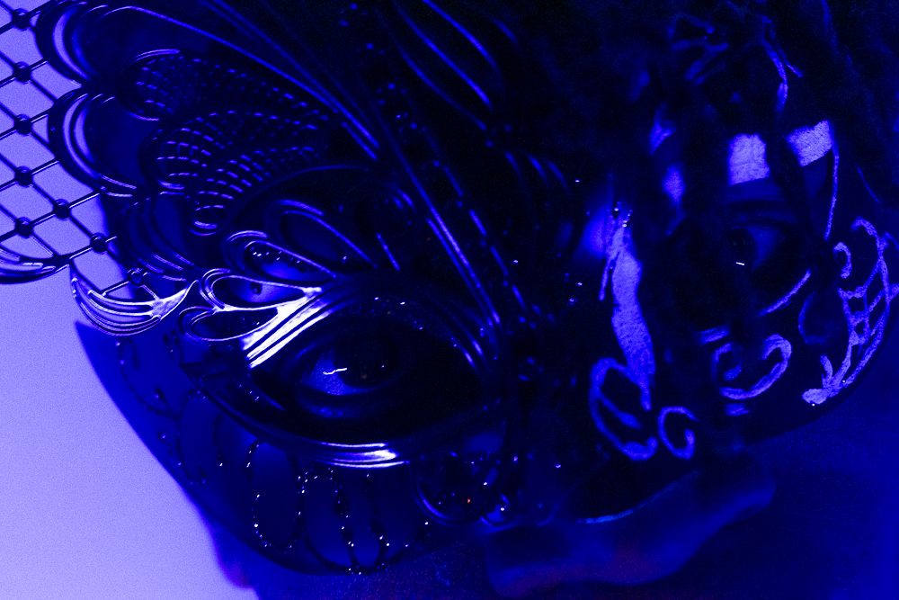
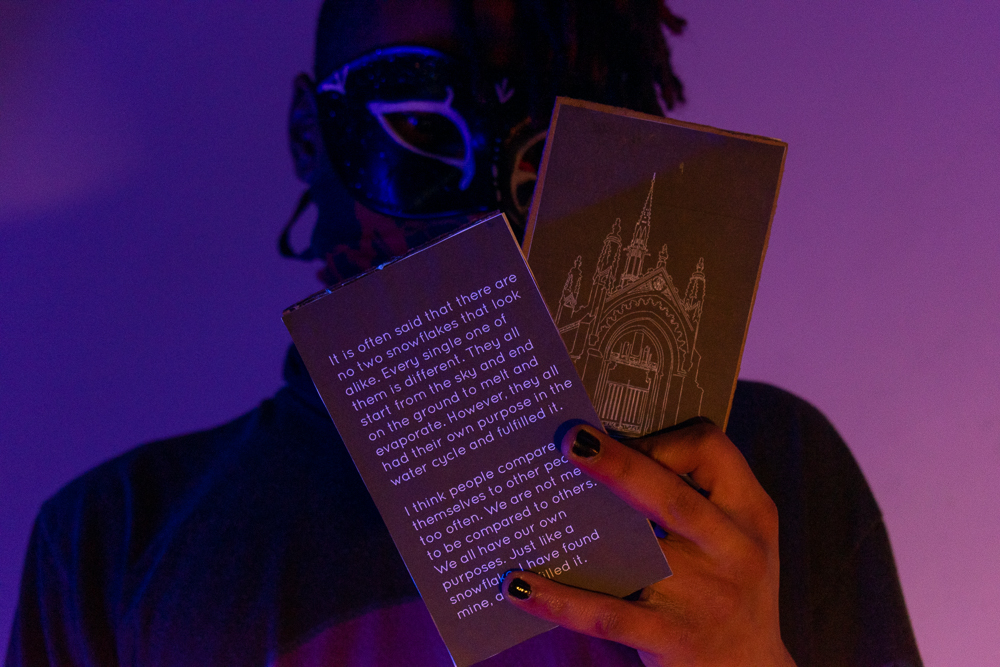
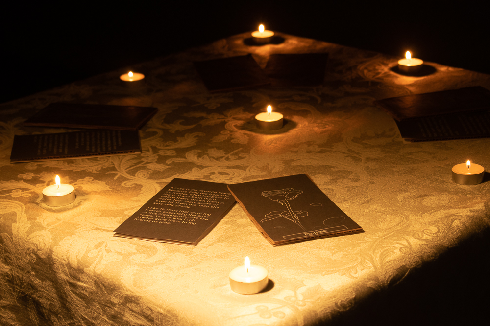
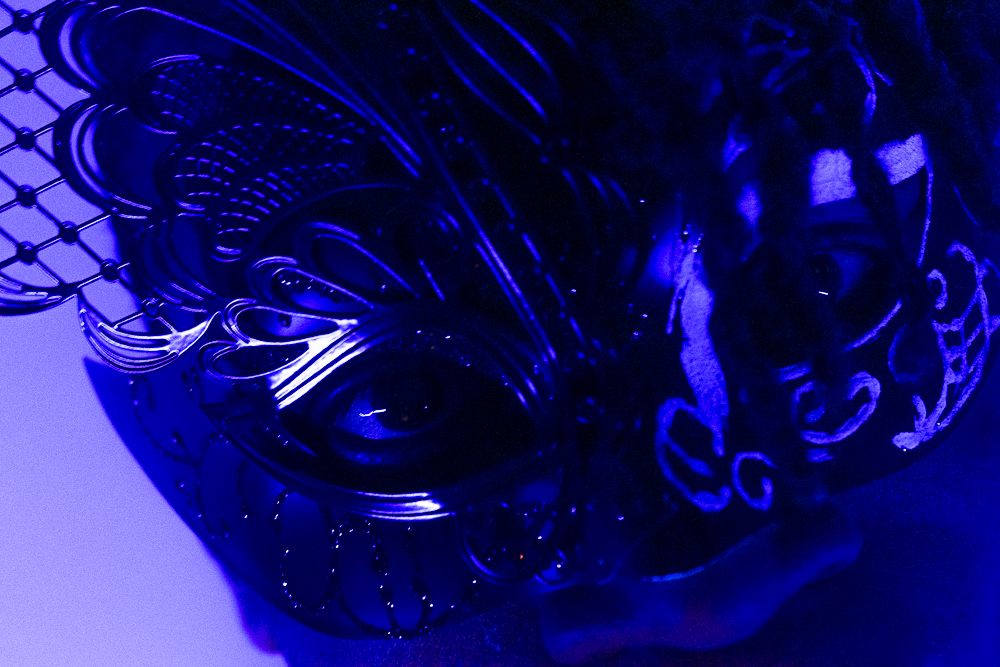
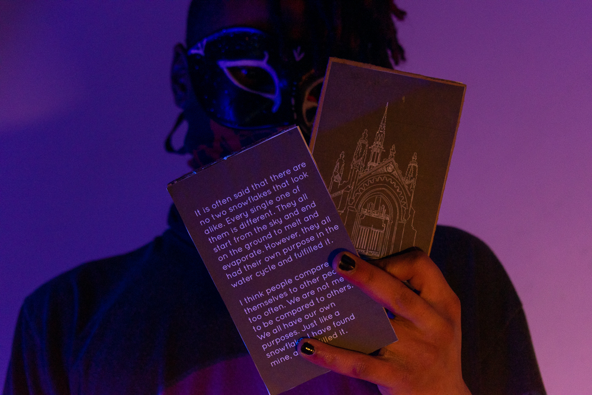
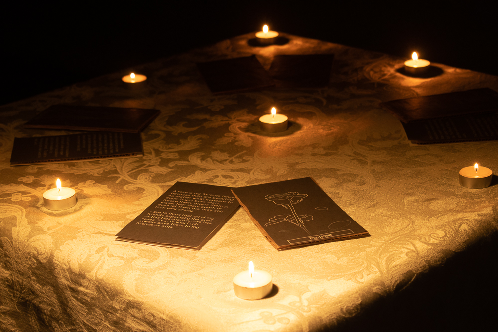
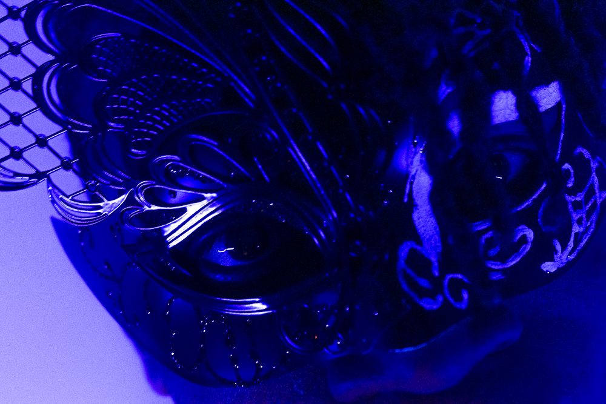
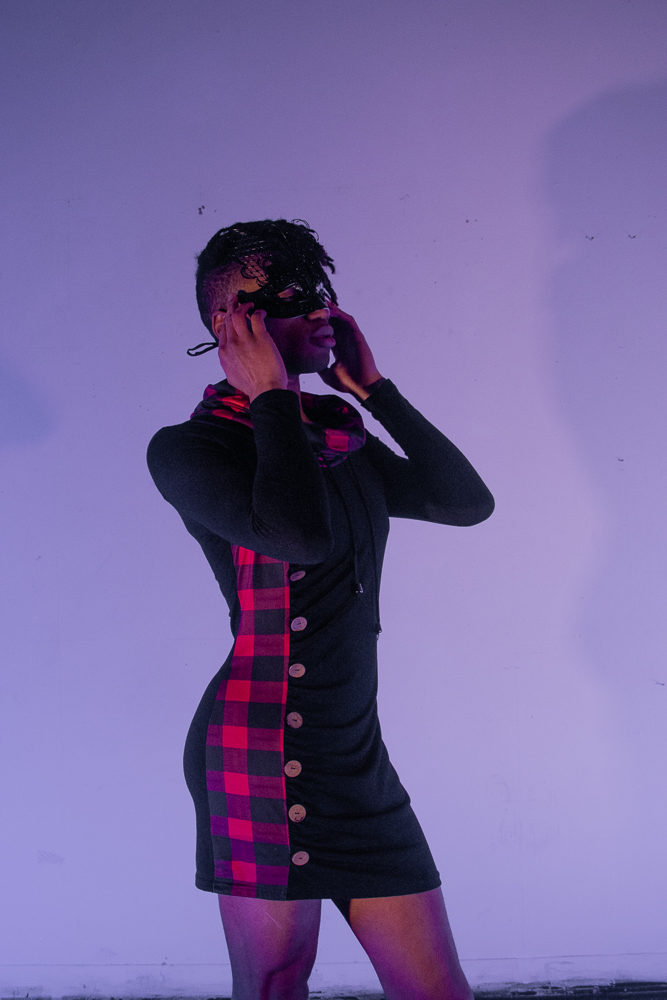
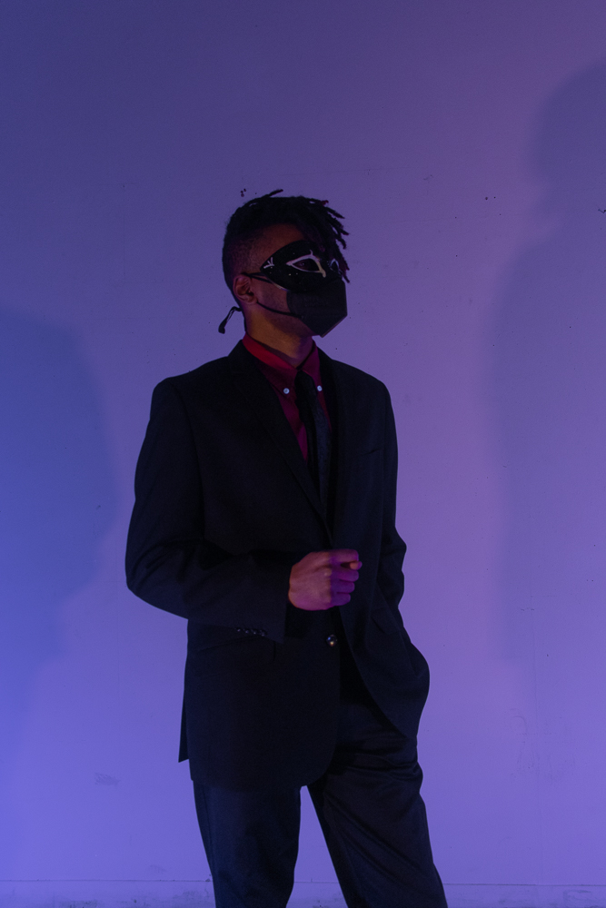